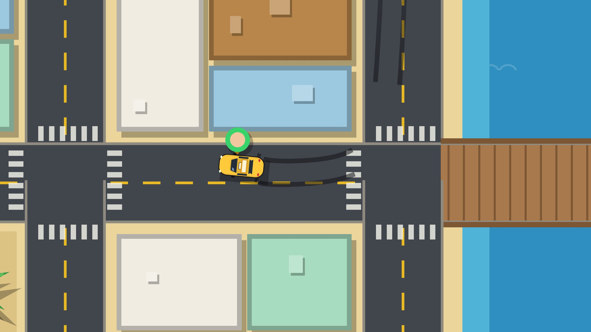

Pick up. Drift. Drop off.
A one-thumb arcade driving game for iPhone and iPad. Flick to turn, hold to brake, and get every fare there before the clock runs out. Out 14 January 2027.
You get a clock, a cab and an edge-of-screen compass. The route is up to you. Stop in the zone for a full tip, swing a U-turn into a pickup for a bonus, or grab a bolt in the road and let a super boost take over.
Real gameplay, captured from the game.
One thumb, portrait, short shifts. Driving School lessons teach each move as it comes, and a crash never ends your shift. Rated 4+, with no violence.
Reduced Motion turns off shake, zoom, spins and falling weather. Colour Cues put a shape on everything shown by colour, and marks in the traffic lights. Both are a switch away in Settings and the pause menu.
Free, in 10 languages. Ads are optional and rewarded only: no interstitials, ever. Every cab is earned by playing, never bought.